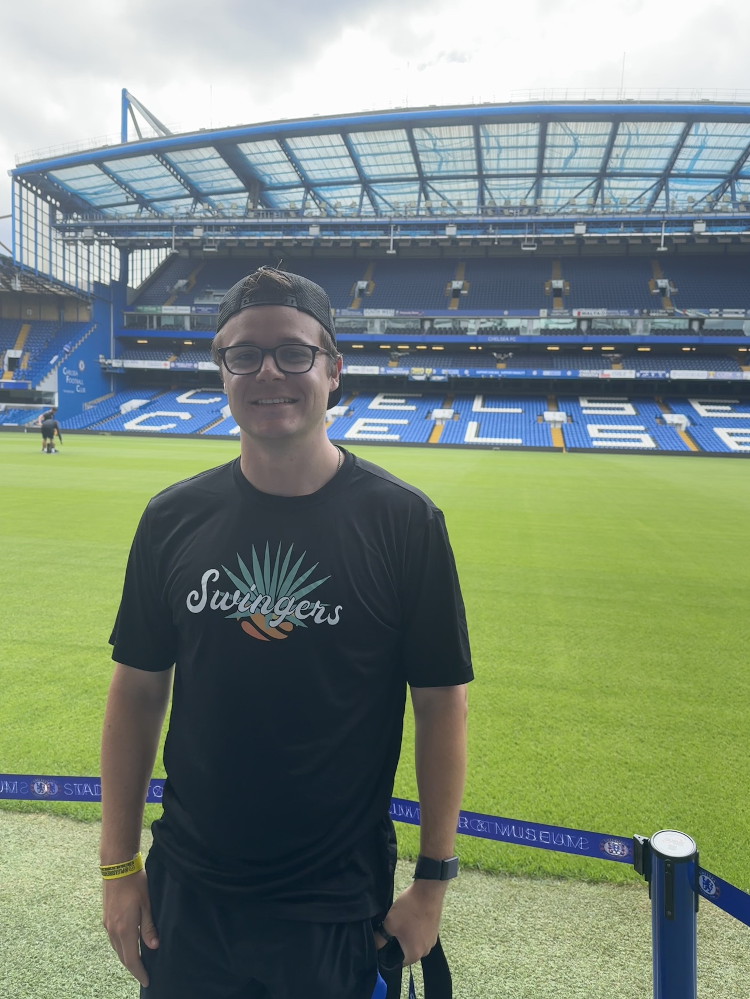
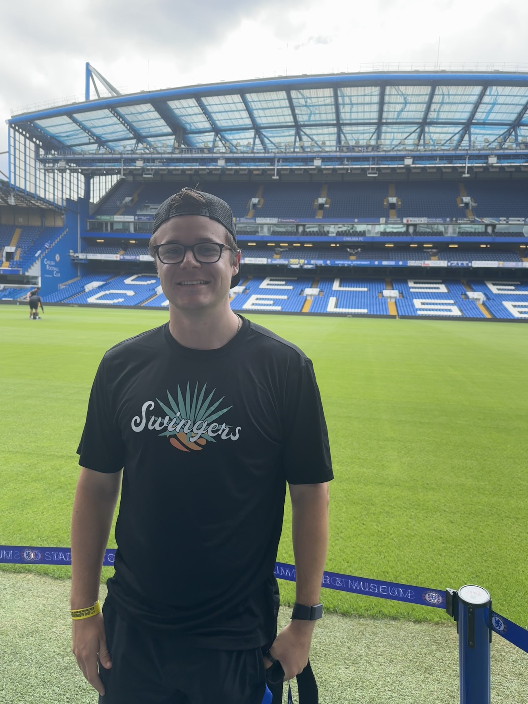

I simply love sports. Even though soccer (football) isn’t my favorite, it was the athletic focal point of London. Countless famous teams are followed like a religion by their diehard fan bases. A popular introduction when I met someone was, “What football team do you support?”. I don’t support any team in particular, however, I attended a Queens Park Rangers vs. Tottenham match and toured the Chelsea stadium at Stamford Bridge.
Soccer (football)
 

The Queens Park Rangers (QPR) game was only an exhibition match, but the energy was still everything I hoped for. I sat in the section with the QPR fanatics who sang songs the whole match, and many of them had team tattoos. Tottenham was the better team. The Spurs played their starters in the first half, including Son, one of the most famous players in the world. Then, both teams went to substitutes in the second half. One of the lesser-known players on the Spurs scored a ridiculous goal coming from many sharp passes and an easy, clean, tap-in finish. Tottenham won 2-0, and their fans sang loudly after each goal and after the final whistle. Chelsea’s stadium at Stamford Bridge was a little outdated, but it was massive, and the tour was spectacular. The tour guides passionately told vivid stories as they had lived through them. I got to go in the locker rooms, onto the pitch, and all around the stadium.
Food
London’s food was a major highlight. I went to Borough Market. It was super impressive, spanning multiple blocks and buildings. It had every kind of food imaginable, both grocery-style and made-to-order food. I went to The Black Pig sandwich shop for their pulled pork sandwich upon the recommendation of a friend I met in Dublin. It was seriously the best sandwich I ever had. I also got a delicious Thai iced tea from another place. London is known for its Indian food. I went to a famous touristy place called Dishoom. It was delicious and reasonably priced. It had unlimited Chai tea, too. I’m sure there were better, less-touristy options, but I’ll have to check them out next time. I ate many meals solo on my trip. It was quite peaceful and fun to people-watch others in the restaurant.
Shops


Something unique to London was the narrow side streets lined with shops. These streets had luxury designer shopping, small boutiques, and restaurants. I don’t shop for nice clothing, so I walked straight through those. However, it was still enjoyable to walk slowly and experience the culture. On one of the narrow, high-end food streets, I stopped for a stroopwafel (my favorite) and a rose petal lemonade. I think it was 6 pounds for both, not too expensive.
Overall
I see what all the hype and love for London is about. It truly was an amazing city. But I found it more difficult to make friends there than in other cities. I think the bigger the city, the harder it is to make friends. I’ve talked to other people about this, and they agree.